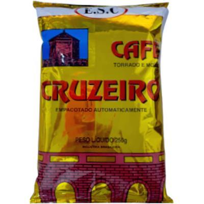

Portal
Cruzeiro do Sul
Catálogo Cruzeiro do Sul
Vale do Juruá
Preparando o site
Portal
Preparando o site
Portal regional de notícias, serviços e agenda para Cruzeiro do Sul e Vale do Juruá.
Leitura responsiva ativa para celular, tablet e desktop.
Atualizações rápidas do que importa agora.
cruzeiro do sul e vale do jurua
Notícias, serviços e agenda do Juruá em leitura rápida.
destaque principal Notícias locais Resumo da notícia principal da área selecionada. Ler matéria Foto: Rio Juruá / Wikimedia Commonsjuruá em destaque
Cobertura completa da nossa região
Juruá hoje
Cruzeiro do Sul
Serviço no Juruá
Festas & Social
roteiro rápido
Primeiro o que aconteceu agora, depois Cruzeiro do Sul, Vale do Juruá, Acre e assuntos de fora quando tiverem impacto claro na região.
últimas notícias
colunas e opinião
destaques especiais
Dez notícias em fluxo contínuo: cidade, Vale do Juruá, Acre, serviços públicos, Brasil e mundo.
Quando a base atualiza, este bloco puxa o fato mais recente sobre cheia, chuva, rotina urbana ou serviço essencial.
Veja o que aconteceu nos últimos dias e continue lendo pelo arquivo.
O arquivo reúne o que mexe com o dia a dia antes de separar por tema.
Ver matériaLeitura rápida conecta nível do rio, bairros e Defesa Civil.
Ver arquivoAgenda social, cultura e serviço aparecem com leitura limpa e contexto.
Ver eventosBusca por tema, fonte, bairro ou palavra-chave. Cada card abre a matéria.
Arquivo regional pronto para receber notícias verificadas.
Cada área vira rota clara: notícia, serviço, agenda, comunidade e comercial.
Telefones úteis, prazos, atendimento, transporte e utilidade pública.
Ver serviçosCultura, festas, feiras e bastidores com foto real e contexto.
Ver eventosTudo que já entrou no portal, pronto para busca limpa.
Abrir arquivoO atalho abre notícias de cultura no arquivo, sem cair em área genérica.
Ver culturaMarcas da região entram com identificação clara e visual premium.
AnunciarContatos importantes ficam organizados para resolver mais rápido.
Mande um aviso, uma reclamação ou uma pergunta. A equipe confere antes de publicar.
Cinema, palco, cultura pop e agenda cultural com fonte identificada.
Conversas, relatos e registros publicados ficam organizados para consulta.
Abrir arquivo RegistrosAtalho para imagens, bastidores e cobertura visual já vinculada às notícias.
Ver registros Cultura popLeitura leve com fonte identificada e caminho para o acervo completo.
Ver cadernoPrevisão, nível do rio, trânsito e contatos de emergência reunidos para consulta rápida.
Chuvas leves, sensação de 26°C. Umidade alta e vento fraco no Vale do Juruá.
Acompanhe pontos baixos, rotas alternativas e avisos da Defesa Civil.
Veja desvios, horários de maior movimento e orientação para deslocamento.
Consulte canais úteis antes de sair de casa ou compartilhar um aviso.
Shows, feiras, encontros e movimentações culturais com data, local e caminho para confirmar.
Encontro com pauta de saúde, acesso e mobilidade.
Programação entra com fonte, horário e rota de serviço.
Ação com data e local para quem precisa resolver pendências sem circular por vários canais.
Fotos, memória local e conteúdos publicados com identificação clara.
Conversas sobre memória, cultura e rotina local entram com fonte, data e contexto.
Fotos da cidade, eventos e cotidiano serão publicadas aqui quando houver acervo identificado.
Abrir galeria de fotosEspaço comercial com selo claro, borda dourada e CTA direto.
AnunciarParticipação local simples, clara e moderada.
Mande uma pergunta, pauta, serviço ou pedido comercial sem sair da leitura.
publicidade local
Formatos comerciais aparecem com identificação clara, integração ao conteúdo e leitura confortável para o público.
Ideal para construtora, faculdade, clínica, varejo ou campanha local.
Fica entre o radar e a comunidade, com boa visibilidade recorrente.
Abra o atendimento comercial já com assunto de patrocínio preenchido para combinar formato, valor, prazo, arte e link de destino.
O único apoio pago para o leitor comum fica aqui: de R$ 1 a R$ 10. Quem apoiar entra no mural de fundadores e ganha uma estrela de reconhecimento no site.
fundadores
Apoiadores confirmados ganham destaque público e ajudam a manter o portal local no ar.

Marcas, profissionais e leitores que apoiam o portal aparecem neste espaço com destaque público.
fale com a equipe
Use este formulário rápido para montar uma mensagem no WhatsApp da equipe: 68 99226-9296.
“Quando o portal junta notícia da rua com documento e linha do tempo, vira serviço.”
“A leitura fica melhor quando a informação vem curta, com fonte e caminho de volta.”